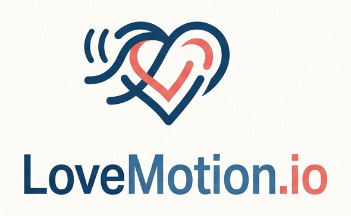

Twin sets in, match sets out — one pure function, written in Common Lisp. No personal data by construction, and every run replays bit-for-bit.
Each stage narrows the pool or annotates it — never both. narrows annotates on the wire
The engine is one pure function. Same twins, same matches — asserted bit-for-bit against blessed payloads in CI, every commit.
Only derived twins cross the boundary, keyed by opaque
tw_… IDs that join to nothing here. Identity
lives in a separate locked-down system this engine cannot reach.
There is nothing to leak.
Observations are append-only, run pools are frozen, matrices are versioned and immutable. Any historical run reproduces exactly as it first ran.